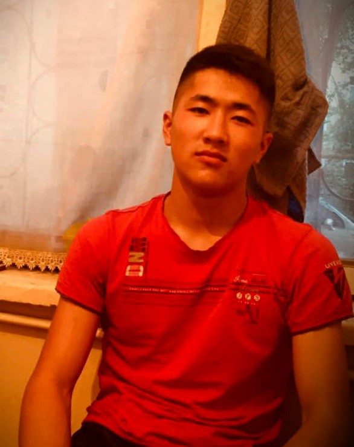

Bekmyrza uulu Janarbek
Front-end Developer
I am Bekmyrza uulu Zhanarbek on January 1, 2002 in Jalal-Abad. I was born
in Aksy district of Abad oblast. I am currently a 3rd year programmer at
the Kyrgyz-Uzbek College named after B. Sydykov. I have been interested in
IT for a long time. Interest in website development, Flutter, Dart,
Python, Javascript
Contacts
Code Example
<h1>Bekmyrza uulu Janarbek</h1>
<h3>Front-end Developer<h3>
<p>
I am Bekmyrza uulu Zhanarbek on January 1, 2002 in Jalal-Abad. I was
born in Aksy district of Abad oblast. I am currently a 3rd year
programmer at the Kyrgyz-Uzbek College named after B. Sydykov. I have
been interested in IT for a long time. Interest in website
development, Flutter, Dart, Python, Javascript
</p>
Languages
- English — elementary
- Russian — elementary
- Kyrgyz — Native
Education
-
I am a 3rd year student of the Faculty of Software Engineering for
Computers and Automated Systems of the College of the Kyrgyz-Uzbek
International University named after Batyral Sydykov
-
Beker.okuu
I study English for free